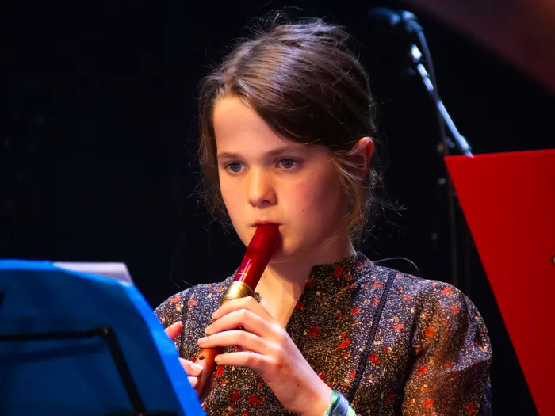
Les om de hoek
Vier leslocaties in de gemeente. Geen gesleep naar de stad, wel een vakdocent dichtbij.
Toegang4 kernen
Dé muziekschool van de gemeente Sint-Michielsgestel · les in vier kernen
Les in Sint-Michielsgestel, Berlicum, Den Dungen en Gemonde
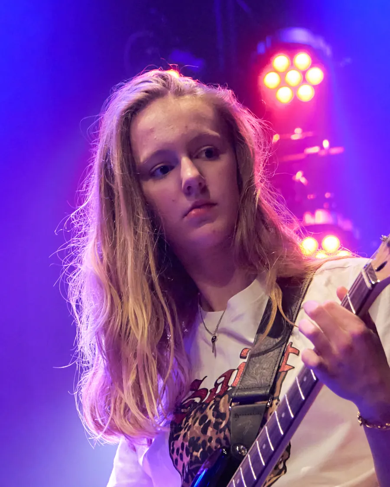
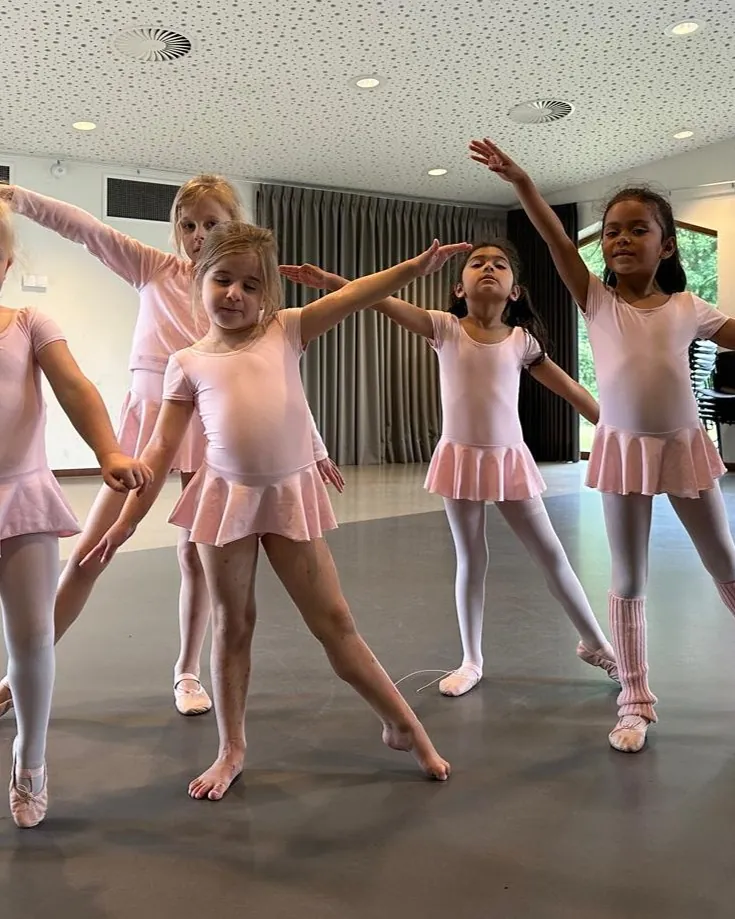
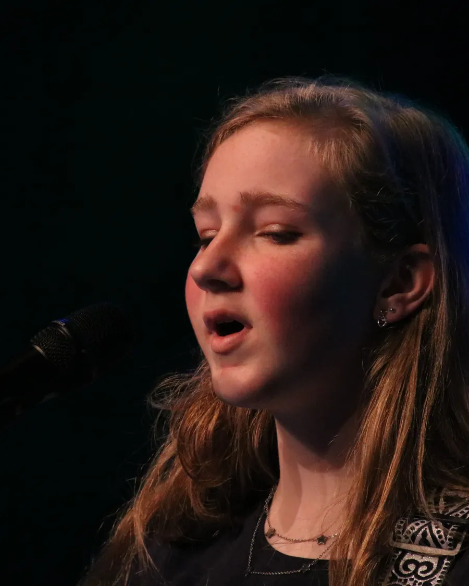
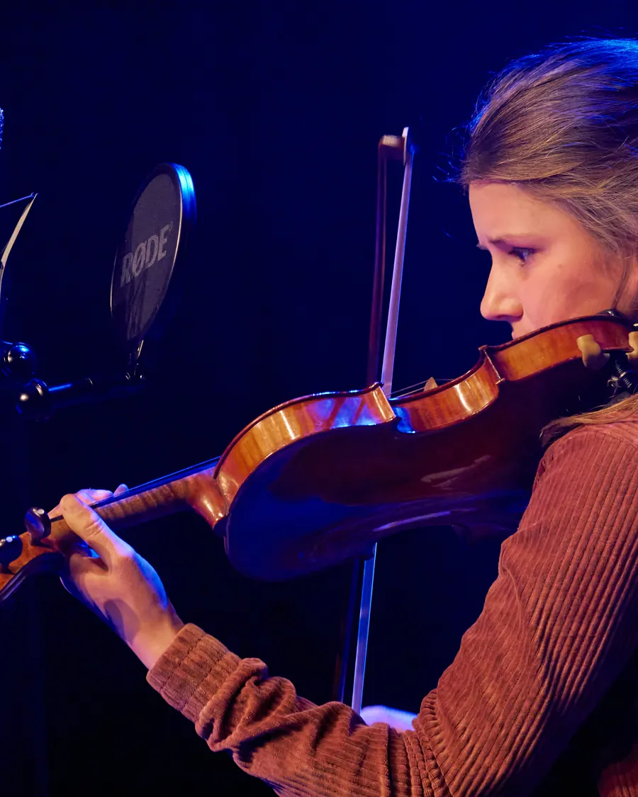
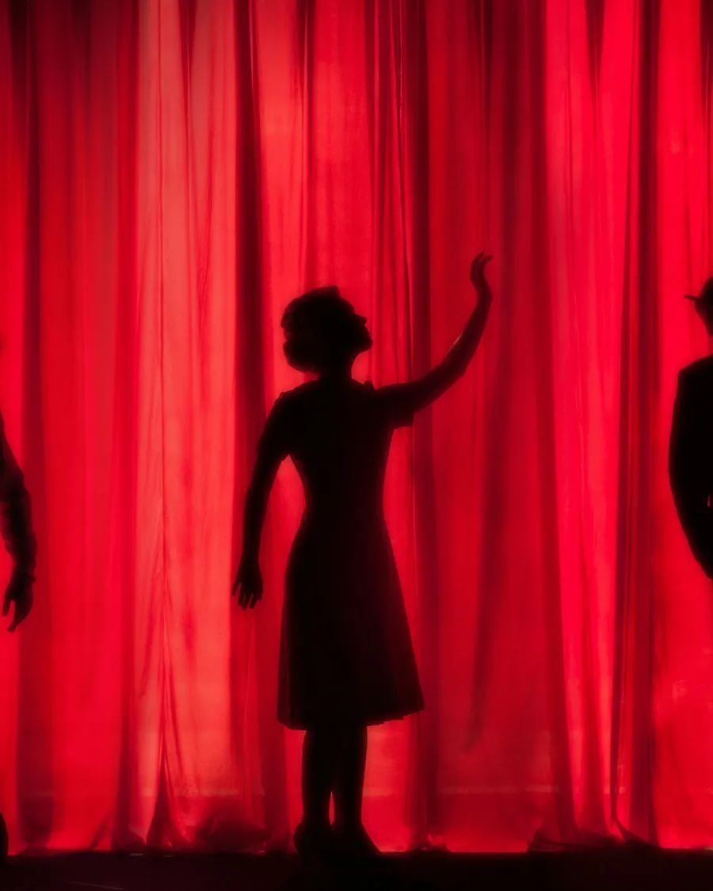
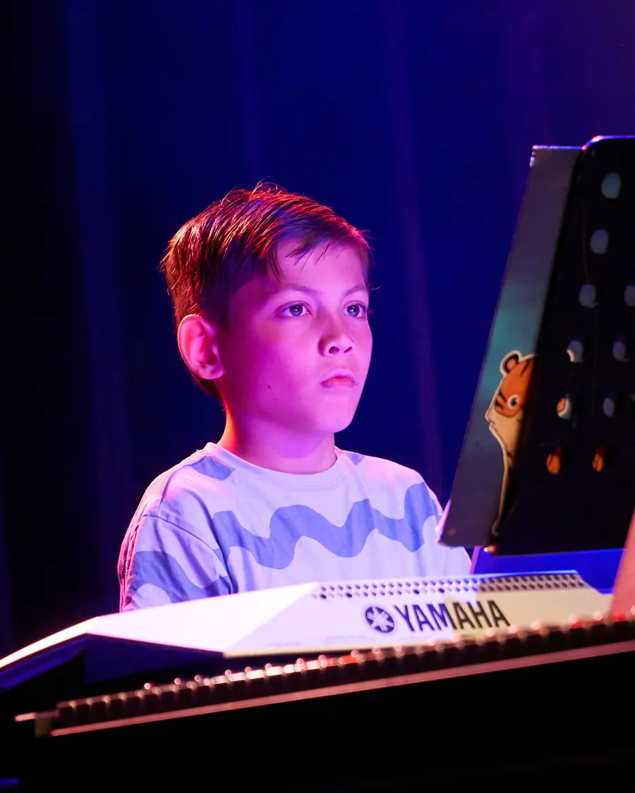

Vier leslocaties in de gemeente. Geen gesleep naar de stad, wel een vakdocent dichtbij.
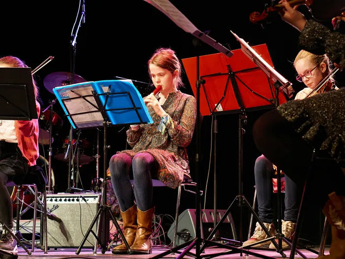
Woon je in de gemeente en ben je jonger dan 21? Dan betaal je het gesubsidieerde jeugdtarief.

Kerstconcert, Médèz Rocks!, TalentenConcert en de musical in een echt theater.
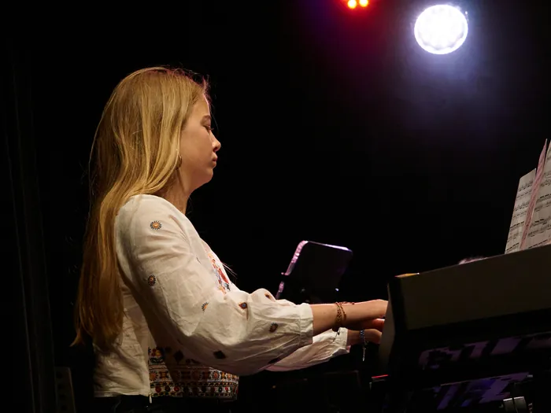
Piano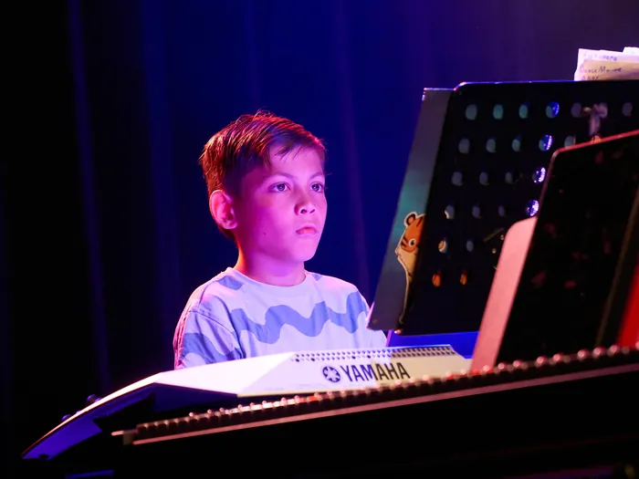
Keyboard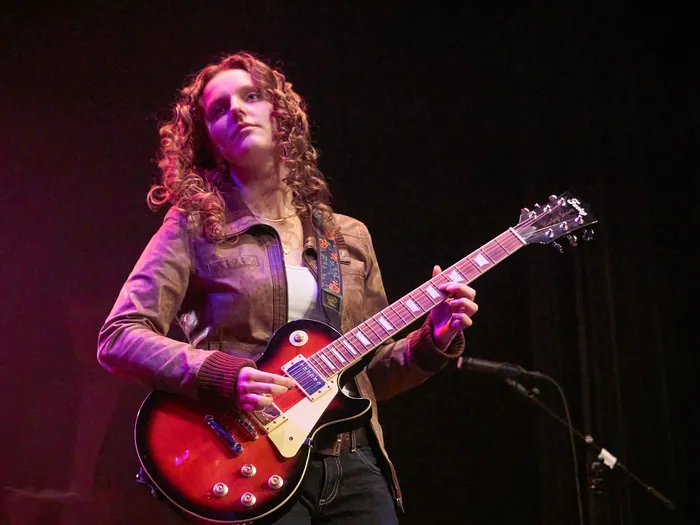
Gitaar en bas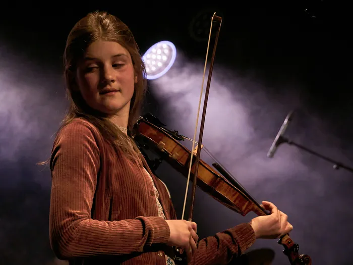
Viool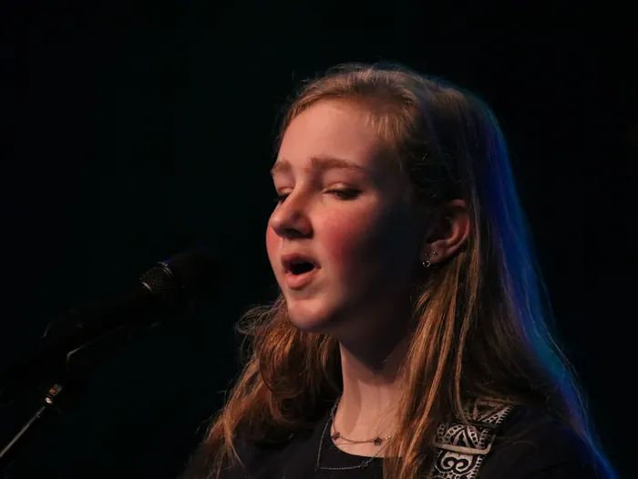
Zang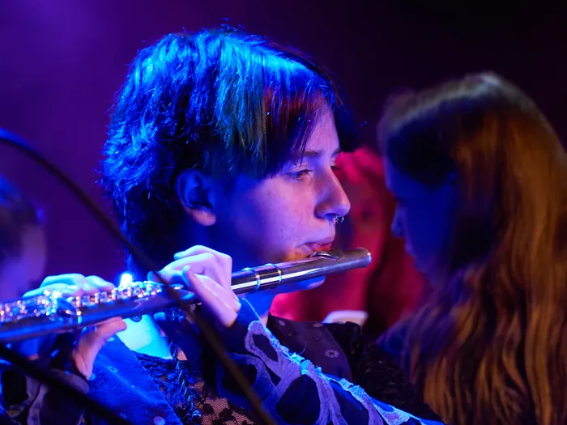
Dwarsfluit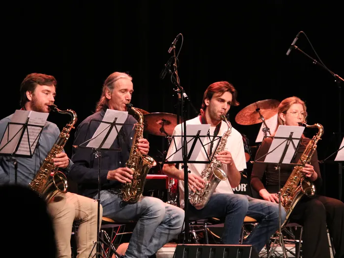
Saxofoon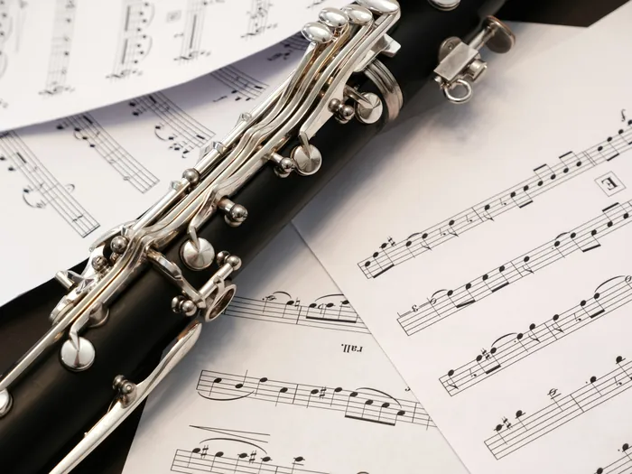
Klarinet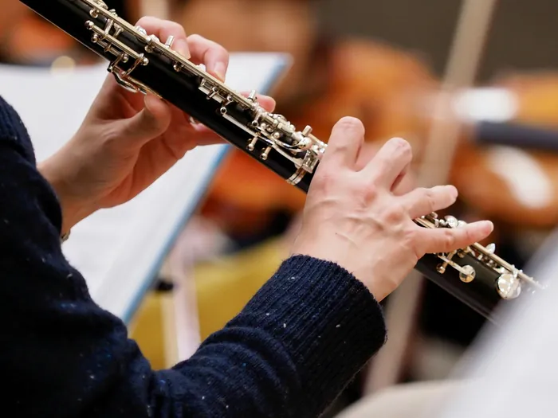
Hobo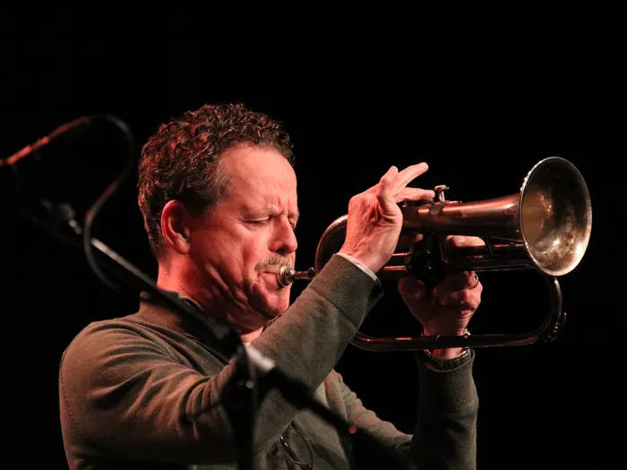
Trompet en bugel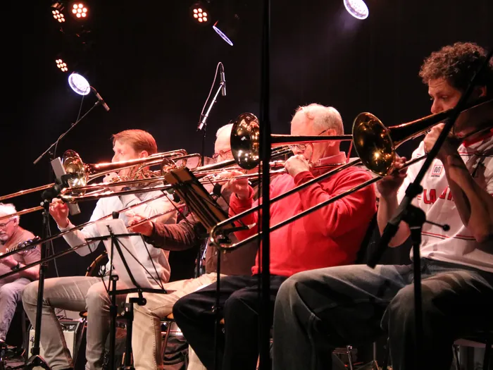
Trombone en bariton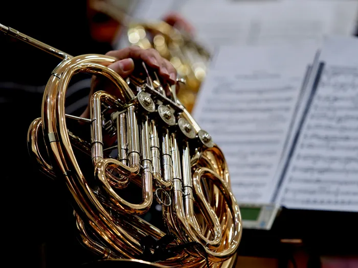
Hoorn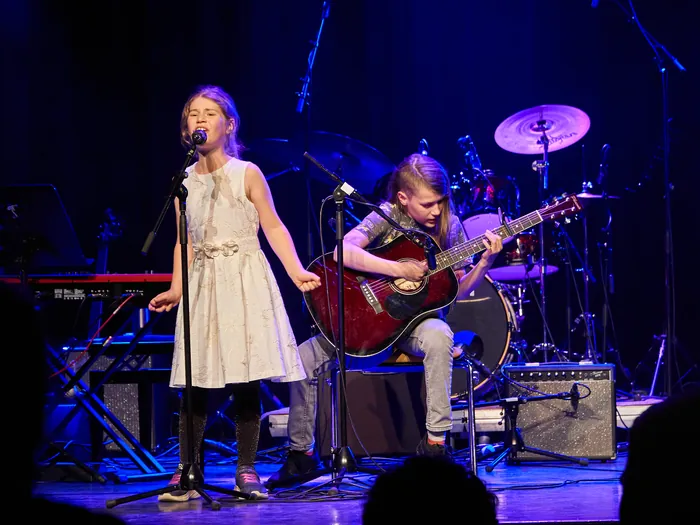
PopbandElke leerling krijgt de kans om op te treden. Zet de data alvast in je agenda.
Onze zoon stond in maart voor het eerst met zijn gitaar op het podium bij Médèz Rocks!. Zenuwachtig vooraf, stralend na afloop. Dat moment had hij zonder deze school nooit gehad.
Mijn dochter van vijf danst elke woensdag in De Meander. Ze oefent thuis haar posities voor de spiegel.
Op mijn zestigste begonnen. Les in Berlicum, op tien minuten fietsen. Ik speel nu mee in het improvisatie-ensemble.
De voorstelling in het theater was het leukste wat ik dit jaar heb gedaan. Zingen, dansen en toneel tegelijk.
Twee kinderen, twee instrumenten, één school dichtbij. En het jeugdtarief maakt het voor ons haalbaar.
Bewegen op muziek met een groep leeftijdgenoten. Ik ga elke week met plezier naar de les.
Samen met mijn zoon les op één piano. Het is ons vaste halfuurtje van de week geworden.
Je betaalt in tien maandelijkse termijnen. Later instromen kan: je betaalt vanaf je eerste les.
Alle tarievenProbeer twee verschillende dingen, bijvoorbeeld gitaar en dans, of klarinet en musical.
Kies je proeflessen